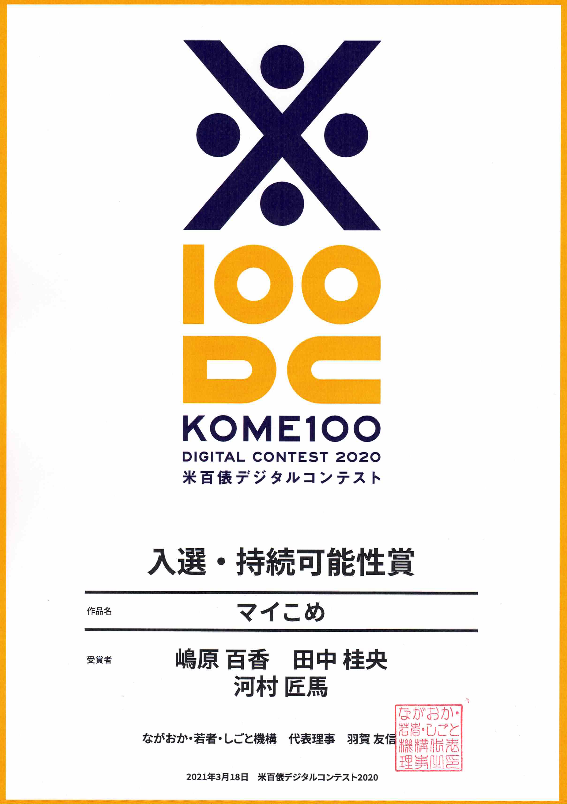
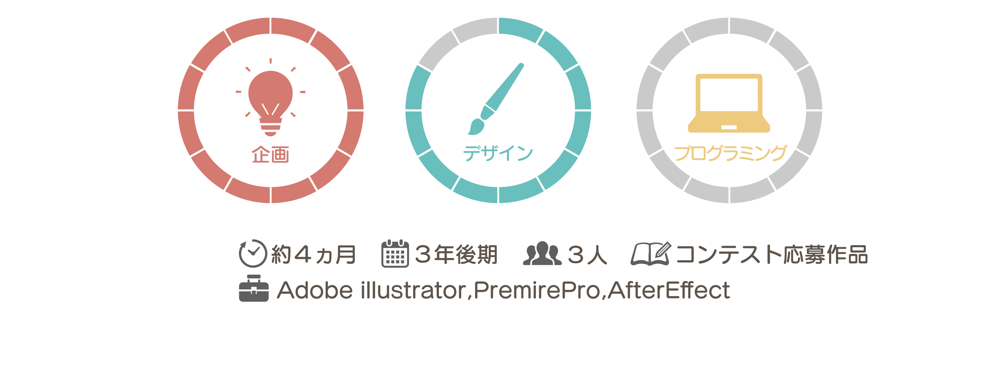

お米から始まる地域謎解きゲーム
米100俵デジタルコンテスト受賞作品
マイこめは、「ある場所チームで暗号を解き明かし地域のある場所を探し出す」
というゲームを通して、交流と地域学習を促すIoTデバイスです。
米100俵デジタルコンテストについて
米100俵デジタルコンテストは、新潟県ながおか・若者・しごと機構主催のデジタルアイデアコンテスト。
第一回目となる今回のテーマは「子どもたちの暮らしを豊かにするデジタルプロダクトのアイデア」でした。
このコンテストの背景である”米百俵の精神”には「ひとづくり」や「まちづくり」といった理念があるため、
今回私たちは、「子どもたち」を中心に「人」と「地域」をつなぐデバイスを考えました。
マイこめのつかいかた
すれ違うと振動・協力しないと解けない暗号の仕組みで子ども同士の交流をつくります。
また実際に地域を探し、人に話しかけることで地域での交流と学習に繋げます。
またお店に足を運ぶことで地域活性化にもつながります。

地域全体を巻き込むストーリー設計を評価していただき、
３月に行われた二次審査では持続可能性賞を頂くことができました。
